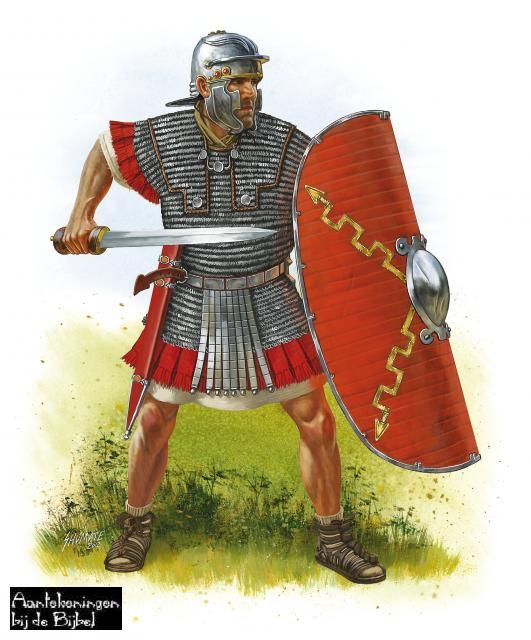

Welkom hier kun je alles vinden over de Romeinse geschiedenis. Ik hoop dat er genoeg voor jullie bij staat. Natuurlijk hebben we allemaal wel eens een keer over de Romeinen gehoord, bijvoorbeeld over het Colosseum (rechts) of de beroemde uitspraak van Caesar: "veni, vidi vici", wat betekent "ik kwam, ik zag en ik overwon" of misschien heb je het verhaal van Romulus en Remus wel eens gehoord, want dat is ook vrij bekend. Of je wil gewoon informatie voor een presentatie of een werkstuk of iets dergelijks. Dan kun je hier alle antwoorden vinden, wat bereft de Romeinen.
 Voor een gevoel van tijd, hier is een tijdbalk voor je.
Over iedere tijdsperiode is er een speciale pagina (zie top). Hier kun je wat vinden over de Romeinen in het algemeen. De Romeinen zijn tegenwoordig heel erg bekend in Nederland en dat komt omdat ze er een heel deel van hadden veroverd. Daarnaast hadden ze ook een specifieke bouwstijl, voor een deel overgenomen van de Grieken, maar ze hebben zelf ook dingen uitgevonden. Er werd wel eens gezegd dat als de Romeinen niet op hun slaven hadden geleund, dat ze dan al machines, die tegenwoordig gebruikt worden, hadden kunnen ontwikkelen. Daarnaast hadden ze genoeg bouwkunst en militaire techniek om een groot deel van de wereld te veroveren en het een stuk beter te maken. Dit was ook duidelijk tijdens de Renissance, die de Romeinse technieken weer terugbrachten. Dit zorgde voor de basis technieken, waar ze toen nog niks mee konden, werden nu gebruikt om nieuwe uitvindingen te doen.